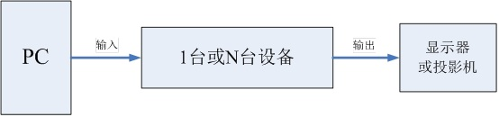
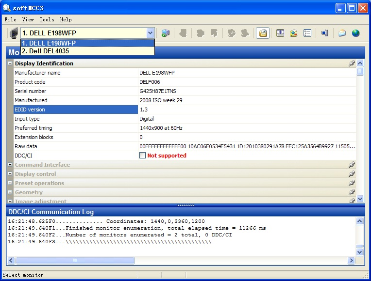
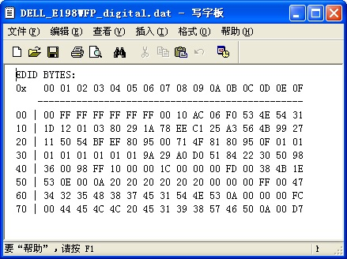
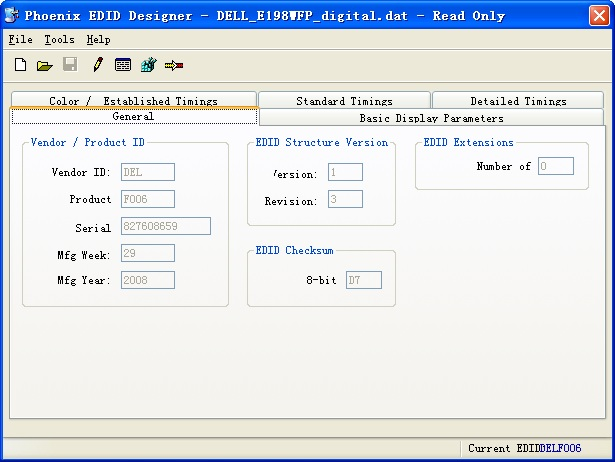
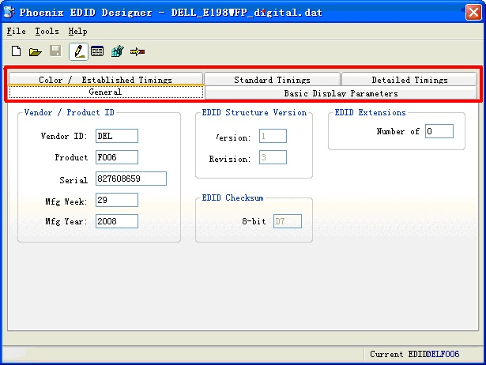
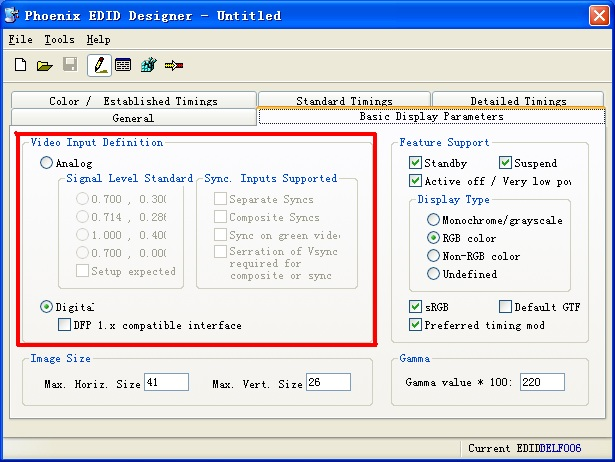
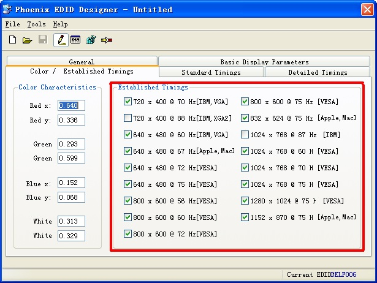
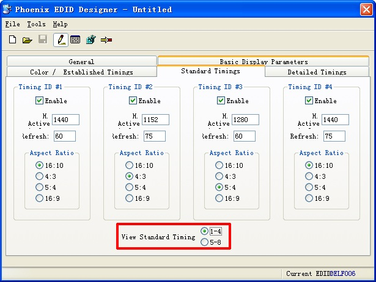
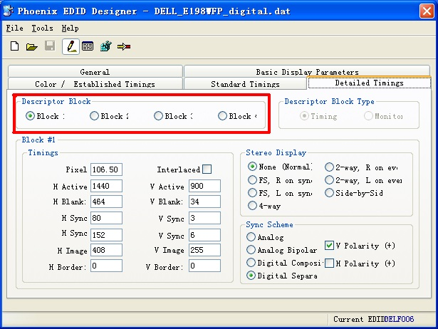
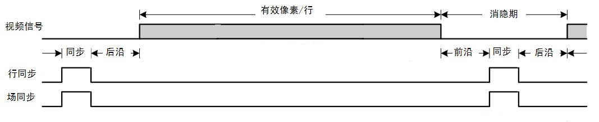

来源:http://wenku.baidu.com/view/8f82728471fe910ef12df8f4.html
Q1: 为什么要写这篇文章？
A1：在最近的工作中遇到了不少问题，其中很多都是和EDID相关的。可以说，作为一家以“显示”为生的企业，我们时时刻刻在与EDID打交道。EDID这东西很简单，但是如果不了解其基本原理和概念的话，会给我们的工作带来不少麻烦。因此，我决定将我对EDID的理解和调试EDID的一些经验写成一篇文章，供大家学习和参考，希望能对大家的工作有所帮助。为了方便阅读和理解，文章写成问答的形式。由于本人接触EDID的时间不长，文章中难免有错误和疏漏之处，希望大家给予指正。好，闲话少说，咱们书归正传。
Q2：EDID是什么？
A2：EDID的全称是Extended Display Identification Data(扩展显示标识数据)，共有128字节。其中包含有关显示器及其性能的参数，包括供应商信息、最大图像大小、颜色设置、厂商预设置、频率范围的限制以及显示器名和序列号的字符串等等。形象地说，EDID就是显示器的身份证、户口本、技能证书等证件的集合，目的就是告诉别人我是谁，我从哪来，我能干什么。
Q3：为什么要使用EDID？
A3：为了能让PC或其他的图像输出设备更好的识别显示器属性
EDID并非古而有之，在古老的CRT时期是没有EDID这个概念的，那为什么后来会有呢？因为随着显示设备的发展，显示器的种类越来越多，模拟的、数字的、普屏的、宽屏的、17寸、19寸、22寸……这让PC傻了眼，分辨率和时序的种类太多了，而每种显示器又不可能支持所有的分辨率，那怎么知道该给显示器一个什么样的分辨率啊？显示出的效果是最佳效果吗？不仅如此，随便输出一个分辨率还有损坏显示器硬件的可能，这可太危险了。于是，EDID临危受命，担当起显示器和PC之前的传话筒。“PC你好，我是A显示器，我能显示N种分辨率，最佳分辨率是XXX”。“显示器你好，收到你的信息，现在就按最佳分辨率给你输出”。这下大家明白了吧，EDID就是为了能让PC或其他的图像输出设备更好的识别显示器属性而出现的。
Q4：经常听到有同志一会说“EDID信息”，一会说“DDC信息”。那么哪种说法更准确？EDID和DDC的关系又是什么？
A4： DDC的全称是Display Data Channel(显示数据通道)，顾名思义，它是一个通道。我们可以说DDC是用来传送EDID信息的，也可以说EDID信息是通过DDC传送的，所以，“DDC信息”的说法并不准确。至于DDC究竟是怎么传送EDID的，我们后面再说。
Q5：每个显示器只有一个EDID吗？
A5：不一定。
现在的显示器功能很强大，通常都提供多种视频接口，常见的有DVI、VGA、HDMI、Display Port等，由于每种接口的特性和带宽不同，使得不同接口的EDID也不同。使用哪个接口，PC读到的就是哪个接口的EDID。我们的设备主要使用DVI、VGA、VIDEO几种接口。由于VIDEO接口的几种制式如PAL、NTSC等，其分辨率场频都是固定的，没有使用EDID的必要，故不在讨论之列。本文下面的问题都围绕DVI、VGA两种接口展开
Q6：说了半天，EDID对我们到底有什么用？
A6：要回答这个问题，首先要弄清我们设备的应用场景，请看下图

这是一个典型的应用场景，PC将视频信号发送到我们的设备上，经过一系列的传输或切换，设备将视频信号发送到显示器或投影机上，也就是说，我们的设备位于PC和显示器之间。首先，在输入端，设备需要让PC知道自己是能够输入视频信号的，换句话说，设备要“欺骗”PC，让PC认为自己是一台显示器。如果不这样的话，PC可能会拒绝输出任何视频信号的（仅限于DVI接口，VGA接口不需要EDID也能输出），这叫“不见兔子不撒鹰”。除此之外，设备还要告诉PC自己支持的显示时序。而在输出端，当设备需要自建输出时序（如大屏控制器的输出卡）而不是简单的复制输入时序（如各种矩阵设备）的时候，就需要知道显示器支持的显示时序，从而让自己输出的信号能在显示器上正常显示。在这些地方，EDID就发挥作用了。在输入端PC通过读取设备上的EDID来获悉设备支持的显示时序，而同样，在输出端设备需要读取显示器的EDID来确定自己的输出时序。
Q7：上面说过PC上的VGA接口不需要EDID信息也能输出，而且公司的VGA输入设备里绝大多数也没有EDID，那么VGA接口有EDID吗？它是必需的吗？
A7： VGA接口也有EDID，但不是必需的。
液晶显示器、型号较新的CRT显示器和投影机在VGA接口都是有EDID的，而型号较老的CRT显示器和投影机则没有。当PC连接一个没有EDID的VGA设备时，会将其识别成一个“默认监示器”。这时，PC只能输出一些内置的默认分辨率和时序，如果需要的分辨率不在默认的分辨率当中，那PC是没办法输出的。这时候，就需要在VGA设备中添加EDID，来使PC支持需要的分辨率。
Q8：如何获取显示器的EDID？
A8：使用“SoftMCCS”软件。安装软件后打开，可以看到软件界面如下：

操作步骤如下：
1、打开SoftMCCS软件
2、如果接了多台显示器，则在左上角的栏中选择需要读取EDID的显示器型号，如“DELL E198WFP”
3、点击左上角“File -> Save EDID as”，将EDID信息保存在自己想要的位置，文件名可以自己指定，文件类型要选择“Raylar EDID file (*.dat)”
用文本编辑工具（如写字板）打开刚刚保存的EDID文件，如下图

可以看到右下方有128个16进制数，这就是刚刚保存的EDID信息了
Q9：EDID里都包含什么信息？哪些是我们关心的？
A9：刚才我们已经通过“SoftMCCS”软件获取了EDID数据文件，下面要介绍另一个软件来分析这个数据，“Phoenix EDID Designer”。软件只有一个exe文件，不需要安装。点击打开按钮，然后找到并打开我们刚刚保存的EDID文件，打开后如下图

打开之后默认是只读的，数据都是灰色，为了看起来更清楚，点击 取消只读属性，如下图所示

图中红线圈出的部分中可以看到5个选项卡，EDID中的信息基本都包含在其中，我们逐个看一下。
打开EDID文件后默认显示的是“General”选项卡，里面介绍了显示器中一些基本的信息，一般与我们无关，也不用修改。
点击“Basic Display Parameter”选项卡，如下图所示

这里面对我们有用的信息只有“Video Input Definition”（视频输入描述）。在Q7中曾经提到，VGA接口也是有EDID的。而VGA的EDID和其他数字接口EDID的最大区别就是视频输入描述。VGA接口的输入是Analog，而如图中DVI接口的EDID，选则Digital输入。
“Color/Established Timings”

“Established Timings”（内建时序）表示显示器是否支持一些通用时序。若支持，则在相应的分辨率时序前打钩。例如，由上图中可知显示器不支持720*400@88Hz和1024*768@87Hz这两种时序。
“Standard Timings”（标准时序）

标准时序是对内建时序的扩充，最多可描述8个时序，图中我们看到的是1-4个时序，点击红色方框中的“5-8”可看到后4个时序。以时序1（Timing ID #1）为例，“Enable”前打钩表示显示器支持此时序；“H Active”表示一行中的有效像素；“Refresh”表示刷新率，也叫场频率，单位Hz，注意这里的刷新率值必须大于等于60Hz；“Aspect Ratio”表示图像的宽高比，等于一行中的有效像素和图像的有效行数之比。例如时序1中行有效像素是1440，宽高比是16：10，我们就可以知道图像的有效行数是1440/16*10=900。
“Detailed Timings”（详细时序）

详细时序这个区域可以说是整个EDID中和我们关系最密切，也是我们需要了解最多和改动最频繁的区域。它分为4个块（Block），可通过左上角的按钮在各个块之间切换（软件的显示有问题，4个按钮分别为Block 1、2、3、4）。每个块既可以是一个时序说明（Timing）也可以是一个显示器描述符（Monitor Descriptor）。需要注意的是：Block 1必须是时序说明，它描述的是显示器的最佳时序。
上图中的显示的就是Block 1，注意右上角的Timing / Monitor Descriptor切换的部分是灰色的，这证实了我们刚才的说法：Block 1只能表示时序。
左下角的Timing部分描述了时序的主要参数，含义见下表（软件显示有问题，参数名称显示不完整，表格中的参数也仅对应其在软件中的位置）。H Image、H Border、V Image、V Border几个参数一般用不到，表格中没有列出
|
参数 |
含义 |
参数 |
含义 |
|
Pixel |
像素时钟频率 |
Interlaced |
前面打钩表示是隔行显示 |
|
H Active |
一行中有效的像素 |
V Active |
一场中有效的行数 |
|
H Blank |
一行中的消隐期长度，单位是像素 |
V Blank |
一场中的消隐期长度，单位是行 |
|
H sync |
行同步前沿宽度，即从行有效像素结束到行同步开始的像素数 |
V sync |
场同步前沿宽度，即从一场中有效行结束到场同步开始的行数 |
|
H sync |
行同步信号宽度，单位是像素 |
V sync |
场同步信号宽度，单位是行 |
表中各参数的位置关系如下图所示

由图中可知，消隐期=前沿+同步+后沿，这4个参数已知其中3个就可以推算出另一个。
软件右下角的Sync Scheme描述了同步信号的信息。左边是同步方式，一般选择“Digital Separate”（数字分离）；右边是同步信号的极性，选择表示极性为正，即高有效。
Q：如何修改EDID文件？
大多数情况下，我们需要的EDID文件可由已知的EDID文件修改得到，步骤如下：
1、打开Phoenix EDID Designer软件
2、用软件打开需要修改的EDID文件
3、去掉只读属性
4、修改相应的EDID信息。一般需要修改的地方有：
（1）视频输入描述。VGA接口要选Analog，DVI接口要选Digital
（2）详细时序。将Block 1中的时序修改成需要的时序，将其他Block中的“显示器名称”修改成需要的名称
5、点击File->Save EDID as保存修改后的EDID文件
Q：修改EDID文件的时候需要注意什么？
A：修改EDID的时候要特别注意以下几方面：
1、视频输入描述不要选错，VGA接口选Analog，DVI接口选Digital，否则可能造成显卡无输出。如果需要一个VGA的EDID，最好修改前的EDID就是VGA的，而不是用一个DVI的EDID改成VGA的
2、同一种分辨率可能有多种刷新率，如60Hz、75Hz；多种时序，如Normal，Reduced Blanking等。修改EDID的时候要注意设备或显示器支持哪一种，不要改错。具体的时序说明参见VESA的标准文档
Q：如何在设备上加入EDID？
A：Q4中提到，DDC是传送EDID的通道，PC和设备之间的DDC连接如下图所示
图中视频接口包括VGA、DVI等等。DDC实际上是一个I2C总线，PC通过它连接到一个I2C Flash存储器上（一般是24LC21A），里面存储的就是EDID的128字节信息。在设备上加入EDID，就是将Flash接到DDC上，接法见下表。
|
接口 |
SDA |
SCL |
|
VGA |
12 |
15 |
|
DVI |
7 |
6 |
表中是DDC通道在VGA和DVI接口中对应的线序
然后就是将EDID信息写入Flash中。对于大屏控制器和融合器，目前的软件已经支持在PC端更新设备EDID，使用方法参见黄工的文档。而对于其他一些设备，可以使用专用的编程器来烧写Flash。针对生产部常用的EasyPRO 100B编程器，烧写步骤如下：
1、打开Phoenix EDID Designer软件
2、用软件打开需要烧写的EDID文件（dat格式）
3、点击File Export，将EDID文件保存为hex格式
4、用编程器软件调用hex文件进行烧写，具体过程不再赘述